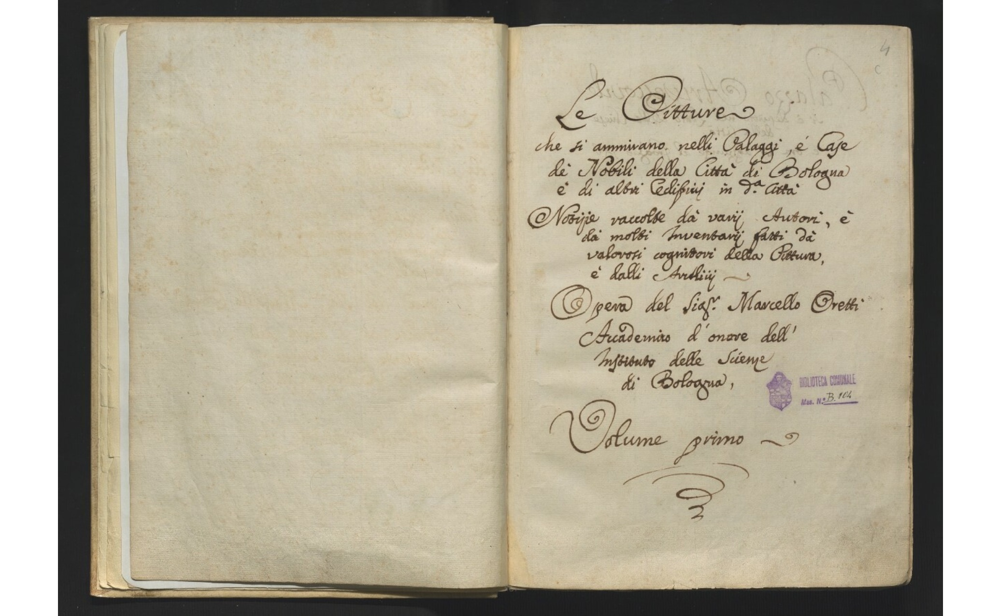

Autore: Marcello Oretti
Luogo di conservazione: Biblioteca Comunale dell’Archiginnasio, Bologna
Data: 1750–1760
Tipo risorsa: Manoscritto
Metadati
Il manoscritto B.104 raccoglie un vasto indice di notizie su collezionisti, artisti e opere d’arte
conservate nelle collezioni nobiliari a Bologna nel XVIII secolo, arricchite da annotazioni critiche.
Questo manoscritto funge da repertorio per numerose collezioni d’arte private presenti a Bologna, con un’attenzione particolare agli artisti locali.
Questo manoscritto funge da repertorio per numerose collezioni d’arte private presenti a Bologna, con un’attenzione particolare agli artisti locali.